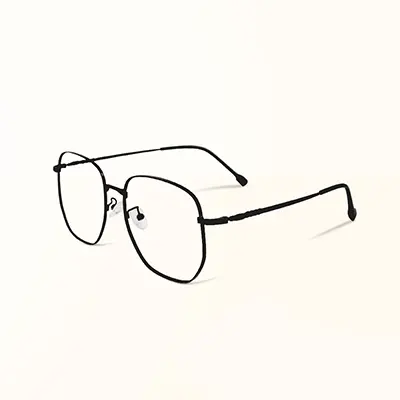

@gotham_daily 🇺🇸 高譚
高譚市即時新聞、公共議題與城市生活。
82.6萬 位粉絲 · 118 人追蹤中
lilith.kate🇺🇸高譚
高譚人這裡的言論僅代表我個人。
1,284 位粉絲·156 人追蹤中
LH5588812 🇺🇸 高譚

好喜歡你。別在白天找我。
31 位粉絲 · 9 人追蹤中
你們需要互相追蹤，才能查看這個帳號的串文。
故事故事一大串故事。
為你推薦
irrelevant.me
只是碰巧看到這些串文的人。
0 位粉絲 · 83 人追蹤中
這個帳號目前不接受陌生訊息。
2027罪城迷聲ARG
編劇： 阿羅
美術： 梅林
技術： 蕭杞
但你可以探索一下今天有什麼新串文？
但……明天大家又會發什麼串文呢？